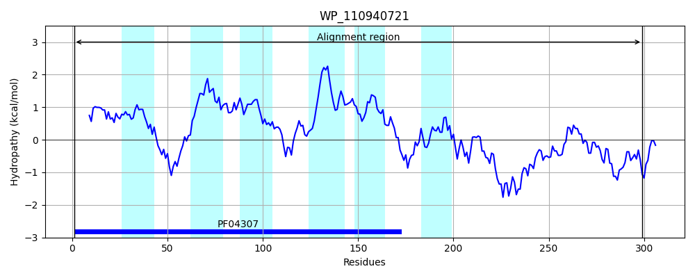
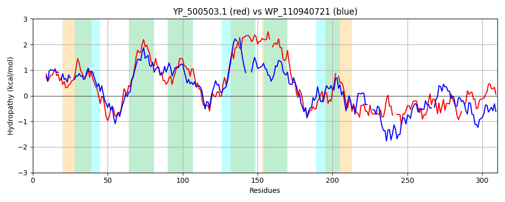

Hit Accession: WP_110940721
Hit TCID: 2.A.7.44.11
Hit Description: gnl|BL_ORD_ID|21752 gnl|TC-DB|WP_110940721.1|2.A.7.44.11 metal-dependent hydrolase [Geosporobacter subterraneus]
Mach Len: 310
e:0.000000
Query TMS Count : 6
Hit TMS Count: 6
TMS-Overlap Score: 3.700000
Predicted Substrates:None
BLAST Alignment:
Score: 264 , Bit scores: 106 bits, E-value: 1.7e-26, Alignment length: 310, Percentage identity: 28
Query: 1 MDTATHIAIGVGLTALATQDPAMASTFGATATTLIVGSLIPDGDTVLKLKDNATYISHHRGITHSIPFTILWPILITFLIFTFFSGTNPFHVWMWAQLAVFLHVFVDIFNSYGTQALRPITNKWIQLSVINTFDPIIFTVLCIGIVLWVIGLHPFAVFF-PIIALLIIYYMIRFKMRAVIKQQALKAIQQEHHPVKVFVAPTI-KFMEWRVAIQTDAHDYVGKAYGRNVVFSDKVERQTLS--TDSILWKVKGNKDIRTFLNFSSIYRWQTTTLADGSTEIRLIDLR-YLKNDHYSFVAIAHVTNDNVID 305
MD TH IG+ ++A + DP + + +G++ PD D V ++ + Y+ HHRG +HSIP + +IT + FF G N F V++W + H F DI NSYG + P T K + ++ +DP+I T+LC L + + F+ II +Y R M+ K + Q + V V V P++ F +W + +++H VG+ N+V ER+ + I+ + R F +F+ +Y + G ++ IDLR YL+N+ + N+I+
Sbjct: 1 MDPVTHGVIGLAISAFSG-DPVTLTN--PVSLGCAIGAMSPDIDIVTRIWGDYVYLKHHRGTSHSIPALLGLAAVITAGLSPFFQGFNFFQVFIWTFIGCMSHTFFDILNSYGAKLFMPFTRKKHMVGILMLYDPMI-TLLCF---LLIFANQKSSFFYGGIIISFGVYLGFRLYMKHYAKLIVTQYYQHGYKLVDVNVLPSLMAFHKWDYIVNSNSHHIVGQV---NLVTKGLKERKKFKKPENEIVELFEETNIGRYFRDFTPLY-YVMHFEEMGKIILKSIDLRYYLRNNFMHHATAIYDKERNIIE 299 | Protein Hydropathy Plots: |
|---|
 |  |
Pairwise Alignment-Hydropathy Plot:
|
|---|
|  |